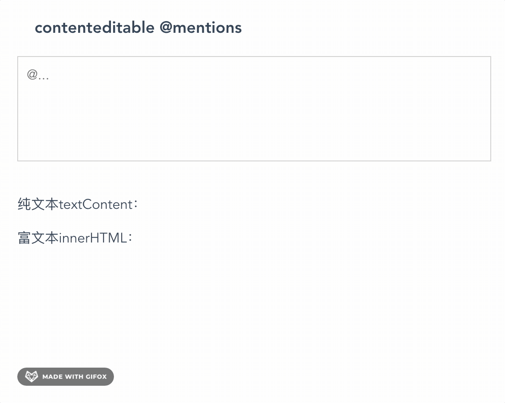

Vue @功能实现
这篇文章发布于 2020/11/30，归类于 Vue
标签：
@实现，@功能实现，@下拉选择实现，Vue @功能实现
如果自己写一个 @ 功能会比较麻烦，在 github 上找了一个现成的开源库：Tribute - ES6 Native @mentions，它是ES 原生的实现，社区有各种框架的实现。这里我们使用它的 vue 实现 vue-tribute。下图是实现效果

在线示例：Vue @功能在线示例 对应的 vue 代码如下，需要注意的地方
- 我们引入 vue-tribute 组件，传入 options 即可
- 样式方面，需要写弹出选择框的样式，不然就没有样式
- options 的配置完全是 Tribute 的配置，到对应的 github 上查找即可，options 的可选值支持动态渲染，支持从接口取
<template>
<div class="container">
<h3>contenteditable @mentions</h3>
<vue-tribute :options="options">
<div
class="content-editable"
contenteditable="true"
@input="valueChange"
placeholder="@..."
></div>
</vue-tribute>
<br />
<div>
<p>纯文本textContent：</p>
<p>{{ textContent }}</p>
</div>
<div>
<p>富文本innerHTML：</p>
<p>{{ innerHTML }}</p>
</div>
</div>
</template>
<script>
import VueTribute from "vue-tribute";
export default {
components: {
VueTribute
},
computed: {},
data() {
return {
textContent: "",
innerHTML: "",
options: {
trigger: "@",
// specify whether a space is required before the trigger string
requireLeadingSpace: false,
noMatchTemplate: "<li>暂无数据</li>",
values: [
{ key: "张三 zhangsan", value: "张三" },
{ key: "李四 lisi", value: "李四" },
{ key: "王五 wangwu", value: "王五" },
{ key: "周杰伦 zhoujielun", value: "周杰伦" }
],
positionMenu: true,
selectTemplate: function(item) {
return (
'<span contenteditable="false"><a>' +
"@" +
item.original.value +
"</a></span>"
);
}
}
};
},
methods: {
noMatchFound() {
console.log("暂无数据");
},
valueChange(e) {
console.log(e.target.innerHTML, e.target.textContent);
this.textContent = e.target.textContent;
this.innerHTML = e.target.innerHTML;
}
}
};
</script>
<style lang="less">
// Tribute-specific styles 略
</style>完整代码参见：vue @功能实现demo | github